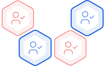

Персональный кабинет дает возможность для инвестора получать
подробные сведения и о статусе личных инвестиций, что не только повышает удобство
использования сайта, но и степень лояльности участников.
Data
Simplicity
Простота покупки токенов
Простота покупки токенов
Это помогает работать с низкоквалифицированными инвесторами.
Таким образом, в проект можно привлечь тех, кто начинает осваивать особенности
крипто-инвестирования.
Token
Simplicity
Реализация различных возможностей
Реализация различных возможностей
Инвестор может принимать участие в голосованиях,
взаимодействовать с остальными участниками проекта, и другие операции со смарт-контрактом ICO.
Projects
Voting

Повышение престижности проекта
Повышение престижности проекта
Наличие такого функционала актуально не для всех проектов,
так как его внедрение отличается сложностью и необходимостью дополнительных расходов
на разработку сайта